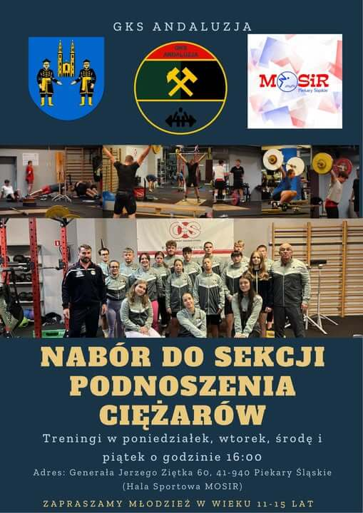

Dołącz do klubu, w którym pasja spotyka się z tradycją. Szukamy ambitnych osób, które chcą reprezentować barwy GKS Andaluzja i rozwijać swoje sportowe umiejętności.
Jak się zapisać? Odwiedź nas podczas treningu na siłowni przy ul. Ziętka 60 lub napisz do nas wiadomość!
Obejrzyj relację z Turnieju Niepodległości i zobacz, jak walczymy o każdy punkt: